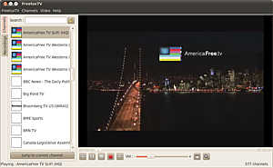
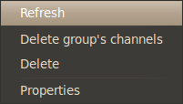

FreetuxTV
Dieser Artikel wurde für die folgenden Ubuntu-Versionen getestet:
Ubuntu 16.04 Xenial Xerus
Zum Verständnis dieses Artikels sind folgende Seiten hilfreich:
FreetuxTV 
 ist ein auf VLC basierendes Programm zum Empfang von Internet-TV und -Radio in diversen Sprachen. Eine Aufzeichnung der laufenden Sendungen und zeitversetztes Fernsehen sind einige der nützlichen Programmfunktionen. Das Programm befindet sich noch in der Entwicklung aber viele bekannte Radio- und Fernsehsender können bereits verwendet werden. Die Liste wird ständig erweitert.
ist ein auf VLC basierendes Programm zum Empfang von Internet-TV und -Radio in diversen Sprachen. Eine Aufzeichnung der laufenden Sendungen und zeitversetztes Fernsehen sind einige der nützlichen Programmfunktionen. Das Programm befindet sich noch in der Entwicklung aber viele bekannte Radio- und Fernsehsender können bereits verwendet werden. Die Liste wird ständig erweitert.
|  |
| SciFi mit FreetuxTV |
Installation¶
Das Programm ist in den offiziellen Paketquellen vorhanden, dazu folgendes Paket installieren
freetuxtv
 mit apturl
mit apturl
Paketliste zum Kopieren:
sudo apt-get install freetuxtv
sudo aptitude install freetuxtv
Hinweis:
Unter Ubuntu 16.04 führt ein Start des Programms aus den Quellen ggf. zu eine Absturz, im Terminal wird ein Speicherzugriffsfehler gemeldet. Die Version aus dem PPA startet hingegen ohne Probleme.
Aus einem PPA¶
Die Installation kann auch über ein PPA erfolgen, in dem aktuellere Entwicklerversionen vorliegen.
Adresszeile zum Hinzufügen des PPAs:
ppa:freetuxtv/freetuxtv-dev
Hinweis!
Zusätzliche Fremdquellen können das System gefährden.
Ein PPA unterstützt nicht zwangsläufig alle Ubuntu-Versionen. Weitere Informationen sind der  PPA-Beschreibung des Eigentümers/Teams freetuxtv zu entnehmen.
PPA-Beschreibung des Eigentümers/Teams freetuxtv zu entnehmen.
Damit Pakete aus dem PPA genutzt werden können, müssen die Paketquellen neu eingelesen werden.
freetuxtv (ppa)
mit apturl
Paketliste zum Kopieren:
sudo apt-get install freetuxtv
sudo aptitude install freetuxtv
Nach erfolgreicher Installation findet man das Programm z.B. unter "Anwendungen -> Unterhaltungsmedien -> FreetuxTV Television Channels Player".
Konfiguration¶
Über "FreetuxTV -> Preferences" gelangt man zum Einstellungsmenü. Unter "General" kann man angeben ob der zuletzt gespielte Kanal gespielt und die Desktopbenachrichtigungen angezeigt werden soll. Aufnahmeeinstellungen verbergen sich hinter "Recordings". Ein  Rechtsklick auf die Kanäle öffnet ein Menü. Hier kann über "Refresh" die Kanalliste aktualisiert werden.
Rechtsklick auf die Kanäle öffnet ein Menü. Hier kann über "Refresh" die Kanalliste aktualisiert werden.

Bedienung¶
Beim ersten Start erscheint eine Auswahlliste der zur Verfügung stehenden Kanäle der jeweiligen Sprachen. Über "Add" wird die Auswahl hinzugefügt.
Im Programmfenster findet man unter "Channels" die Kanäle und hinter "Recordings" werden die Aufnahmen hinterlegt. In der rechten Hälfte findet man die Steuerelemente für die Wiedergabe.  startet die Aufnahme des laufenden Programms. Nach Eingabe der Aufnahmedauer wird diese gestartet.
startet die Aufnahme des laufenden Programms. Nach Eingabe der Aufnahmedauer wird diese gestartet.
Sender selber hinzufügen¶
Ist ein Sender noch nicht in FreetuxTV vorhanden, so kann man entweder
die Datei /usr/share/freetuxtv/tv_channels.xml erweitern. Einfach an den vorhandenen Einträgen orientieren. Die Editierung verlangt Root-Rechte
oder eine vorhandene Playlist im .m3u-Format über "Channels -> Add a Group -> Custom Channels Group" laden.
- Erstellt mit Inyoka
-
 2004 – 2017 ubuntuusers.de • Einige Rechte vorbehalten
2004 – 2017 ubuntuusers.de • Einige Rechte vorbehalten
Lizenz • Kontakt • Datenschutz • Impressum • Serverstatus -
Serverhousing gespendet von